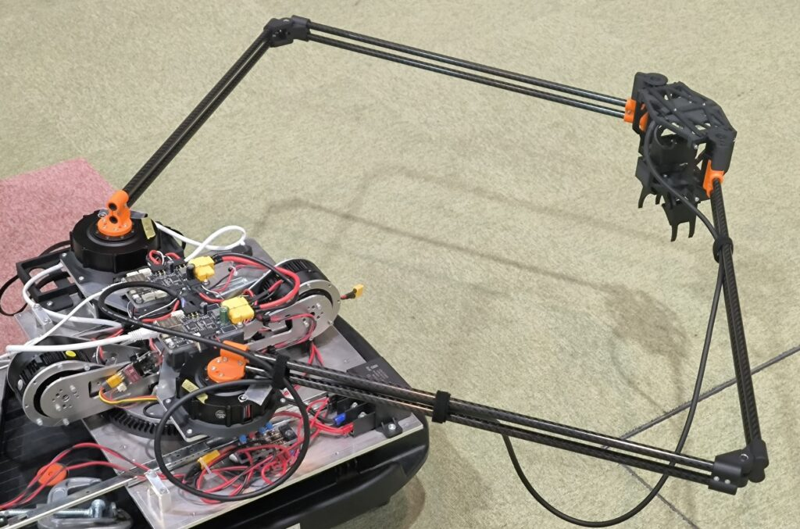
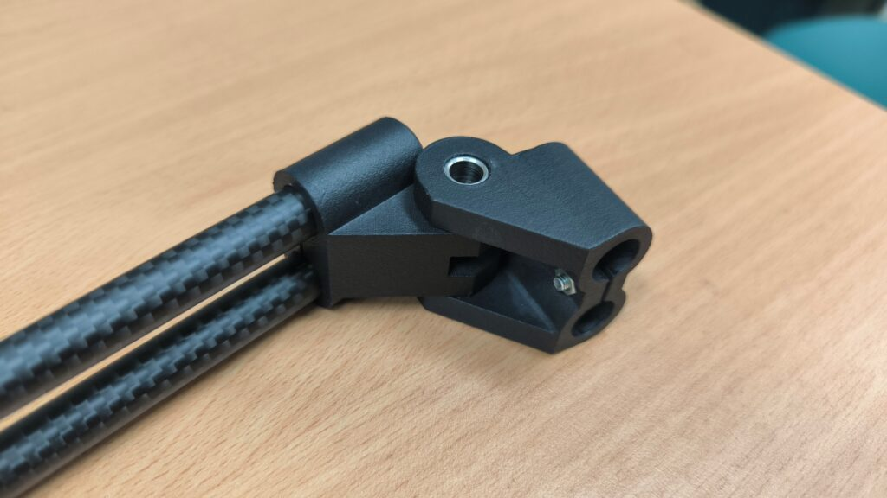
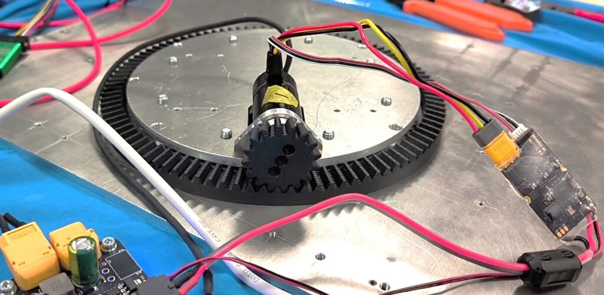
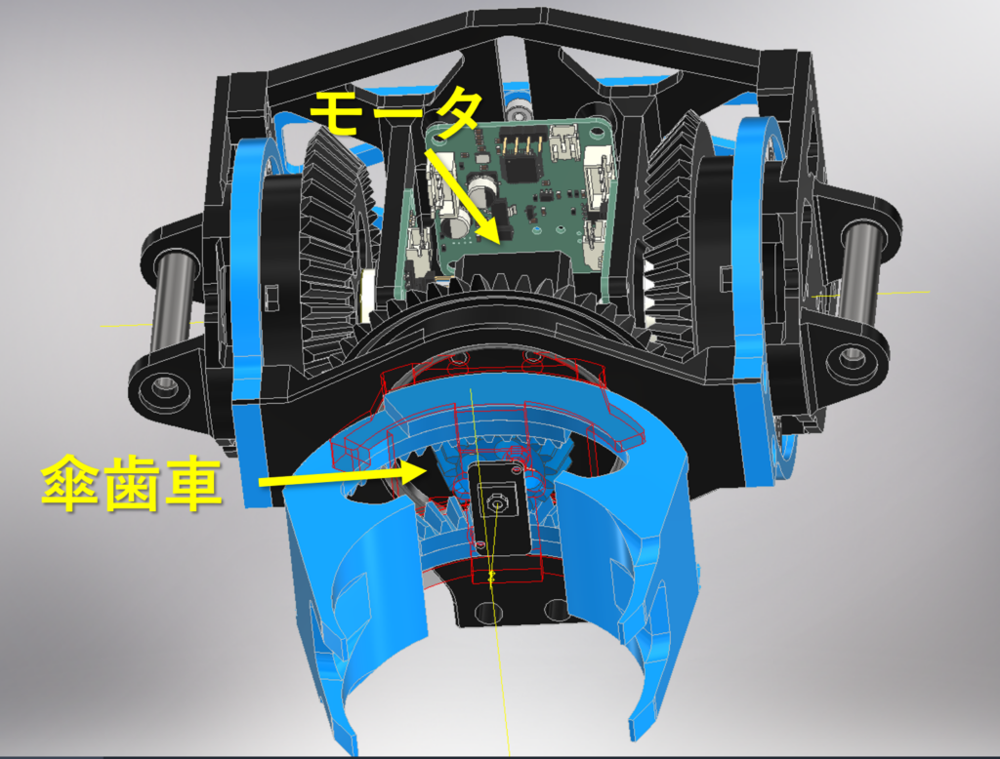
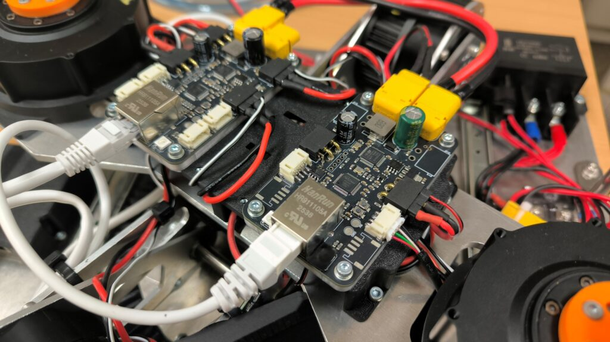

大会に向けた機体づくり
前年に続き、21-horieとチーム「サメサメ工業」でキャチロボに参加しました。2026年のワークはチップスター。私は機械、回路、ロボット側の制御を担当し、21-horieはROS 2の上位制御やVR操作を担当しました。
5節リンクと高さ方向の機構
前年の5節リンクを引き継ぎ、高さを変える部分にもパラレル構造を採用しました。展開すると大きく動く一方、畳んだ状態ではコンパクトに収まります。荷重によってリンクが変形する課題にはモーターのゲイン調整で対応しました。
壊れにくい関節と把持機構
前年に破損が続いたリンクの関節は、積層方向による強度差を考慮してMJF方式のPA12部品に変更。本番でも破損せずに動作しました。エンドエフェクタは傘歯車を使い、ワークを包み込むように引き寄せて把持します。周囲のワークを弾きにくく、容器を潰しにくい構造を狙いました。
制御基板とVR操作
STM32を使った制御基板を自作し、CANでモーターを制御。W5500を使ったEthernet経由のUDP通信で上位側と接続しました。21-horieが担当した操作系ではWebXRとROS 2を連携し、仮想フィールドのワークを動かして実機を操作できるようにしました。
大会での結果
予選は1回戦で6点、2回戦で4点を獲得し、エキシビションにも選出されました。エキシビションではVR操作で実機を動かして得点し、審査員特別賞を受賞。前年の課題だった関節強度と動作を改善し、新しい操作方法も披露できました。
制作の記録




